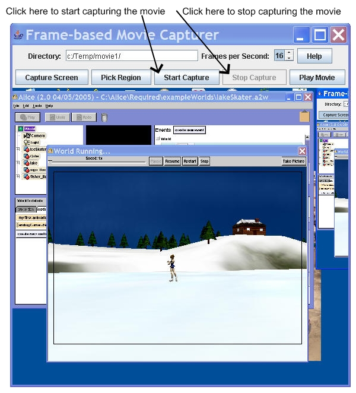

Capture an Alice movie as a series of JPEG images in a directory
To capture an Alice movie as a series of JPEG pictures start Alice, play the movie (click on the Play button), and then pause the movie (click on the Pause button).
Double Click on MovieCapture.bat in the bookClasses directory. This will ask you
for the directory to write the JPEG pictures to.
Enter the name of a new directory. Be sure to either use '/' or '\\' in the pathname since Java treats '\' as a special character. The directory will be created if it doesn't exist.
Click on the "OK" button.
The frame-based movie capturer window will appear.

Position it so that you can see the Alice movie window on the left.
Click on the "Capture Screen" button to see a scaled image of the screen in the frame-based movie capturer window (on the right in the picture below).
Move the cursor to the top left corner of the area to capture and then click and drag the cursor down and to the right to define the bottom right corner of the area to capture. You will see the area outlined in a black rectangle. If the area isn't correct click the "Pick Region" button and try again.
Once the region that you want to capture has been picked click on the "Start Capture" button and then click on the Alice movie window and click "Restart". When the Alice movie is done (or at least the part you want to capture) then click on the "Stop Capture" button.

Then click on the "Play Movie" button in the Movie Capture window to see what you have captured. The movie will appear in a new window: the Movie Player window. The movie will play one time.
Click on the "Prev" and "Next" buttons to see each of the frames. If you captured extra frames at the beginning then find the true start frame and click "Delete All Previous" to remove the extra frames at the beginning. If you captured extra frames at the end use the "Prev" and "Next" buttons to find the true end frame and click "Delete All After" to remove the extra frames at the end.
To write out a Quicktime movie from the frames click on "Write Quicktime". To write out an AVI movie click on "Write AVI". The button will be grayed out while the movie is being written.
The button will look normal when it is finished (not grayed out).
The movies are written to the same directory that the frames were saved to. Close the Movie Player and Movie Capture windows. You can play the movie again by double clicking on MoviePlayer.bat and selecting the directory where you stored the JPEG frames.
Last modified 29 September 2007 at 11:00 pm by ericson@